说是打靶场，其实是学习frida
本次所用的靶场是Frida靶场：https://github.com/DERE-ad2001/Frida-Labs/tree/main
前言 之前一直说要酷酷学习Frida，结果老是没有搞，真的是看不起自己呀！这次说啥也得写了。本博客完结之前会持续更新，目前我的frida功底也是垃圾的一批，所以只作为记录自己学习的日记使用了。
我看到了这个项目：https://github.com/coffeehb/FridaHook 感觉用来学习frida还不错。另外，我还买了非虫大佬的《frida与协议分析》，可惜落在了学校。相信打完这靶场对于frida的初步理解估计是没什么大问题
我的frida路径：/data/local/tmp配合的是雷电模拟器使用的，可能不定期出bug，所以对于稳定复现我还是惴惴不安的。我的Frida安装是跟着吾爱破解的Andorid逆向教程进行搭建的，一些Xposed环境也是如此。
hook之前的准备工作就不多说了，首先安装完毕frida环境，一定要启动两个终端，一个是adb终端(最高权限)，一个是frida终端。手机或模拟器开启adb调试模式。frida可以和python、go、c等联动，而它hook的核心语言是js，因为其用了QuickJS这个东西，这是在frida.re阅读到的。
有一个小技巧，frida工具包:frida-ps -Uai可以看包名和PID等。
部分题解是参考了：frida学习 | 冯宝宝’s Blog
通过Frida-Labs入门Frida | Closure
frida-labs WP - APT114514
部分知识的获取来自于：https://gal2xy.github.io/2024/07/29/Frida Hook/Frida Native层Hook学习笔记/#调用native函数)
实际上官方的仓库也有详细的WP。
相关知识点配合着实践提及了。
考点总结：
0x1：考察java方法重写
0x2：考察调用java含参静态 方法
0x3：考察hook类的静态 属性值和静态 方法
0x4：考察调用java非静态 含参方法和返回值
0x5：考察调用java已经实例化后的类的方法
0x6：Java.choose和Java.use综合利用
0x7：考察hookjava层的构造方法
0x8：hook native层方法参数
0x9：hook native层方法返回值
0xa：主动调用native非导出函数
0xb：动态修改native函数实现
打靶 Frida 0x1 进入APP，需要我们输入一个数字，正确才可以通关。
看代码可以选用的工具很多，比如JEB、JADX，和android平台的MT管理器、NP管理器等，我本人则是喜欢jadx。但是为了锻炼自己，这一题选用JEB。以下是我摘录的关键代码：
1 2 3 4 5 6 7 8 9 10 11 12 13 14 15 16 17 18 19 20 21 22 23 24 25 26 27 28 29 30 31 32 33 34 35 36 37 38 39 40 41 42 43 44 45 46 47 48 49 protected void onCreate (Bundle bundle0) { super .onCreate(bundle0); this .setContentView(layout.activity_main); EditText editText0 = (EditText)this .findViewById(id.editTextTextPassword); Button button0 = (Button)this .findViewById(id.button); this .t1 = (TextView)this .findViewById(id.textview1); button0.setOnClickListener(new View .OnClickListener() { @Override public void onClick (View view0) { String s = editText0.getText().toString(); if (TextUtils.isDigitsOnly(s)) { int v = Integer.parseInt(s); MainActivity.this .check(this .get_random(), v); return ; } void check (int random_num, int input_number) { if (random_num * 2 + 4 == input_number) { Toast.makeText(this .getApplicationContext(), "Yey you guessed it right" , 1 ).show(); StringBuilder stringBuilder0 = new StringBuilder (); for (int v2 = 0 ; v2 < 20 ; ++v2) { int v3 = "AMDYV{WVWT_CJJF_0s1}" .charAt(v2); if (v3 >= 97 && v3 <= 0x7A ) { v3 = (char )(v3 - 21 ); if (v3 < 97 ) { v3 = (char )(v3 + 26 ); } } else if (v3 >= 65 && v3 <= 90 ) { v3 = (char )(v3 - 21 ); if (v3 < 65 ) { v3 = (char )(v3 + 26 ); } } stringBuilder0.append(((char )v3)); } this .t1.setText(stringBuilder0.toString()); return ; } Toast.makeText(this .getApplicationContext(), "Try again" , 1 ).show(); } int get_random () { return new Random ().nextInt(100 ); }
这里我们可以清晰看到，输入的数字满足random_num * 2 + 4 == input_number就会弹出flag。如果用frida的话，就是hook这个get_random方法即可。这里我们需求很简单，hook随机数生成器，得到随机数后frida终端弹出这个值即可。利用hook，我们可以让值永为固定值，抑或是简单得到值进行运算。
接下来介绍一下hook java层代码的简单逻辑：核心逻辑：
代码必须包裹在Java.perform(function() {大括号之中，可以理解为指定在java平台运行，不加hook会报错。这个perform入参必须是函数。
Java.use()Frida 核心 API，根据“完整类名”获取目标类的操控器, 参数必须是“包名+类名”：比如 com.ad2001.frida0x1.MainActivity：类名必须和 APP 源码中完全一致（区分大小写）
这一步千万不要忘记，我老是忘记，会直接报错的！
对于这部分的获取，JEB可以通过交叉引用窗口的复制功能得到形如6,com.ad2001.frida0x1.MainActivity$1.onClick(android.view.View)+3Ch,,"INVOKE: invoke-virtual Lcom/ad2001/frida0x1/MainActivity;->getApplicationContext()Landroid/content/Context;, v3"的值，前面的就是目标值。
MainActivity.get_random：定位到目标类中的 get_random 方法 implementation是Frida 提供的属性，代表方法的具体执行逻辑 // 赋值为新函数：当 APP 调用 get_random() 时，会执行这个新函数，而非原方法
启动的时候，我们要加一个-U，意思是USB调试，-f参数跟包名，这样会重启app，这样执行这个方法就会被我们拦截到，避免拦截不到的情况。这里也是为了方便改输入，因此选择-f启动。网络搜索得知后面一般加一个–no-pause参数表示不暂停程序执行，似乎15版本以后的frida都是默认的了。但是一般CTF比赛用附加模式的多一点。
模式类型
对应参数
核心行为
本质
启动型
-fFrida 主动启动目标 APP 进程，再挂载 Hook
从 0 到 1 启动进程
附加型
-p/-n附加到已运行 的目标进程，挂载 Hook
关联已有进程
写完脚本，假如出现以下错误：
1 2 3 Spawned `com.ad2001.frida0x1`. Resuming main thread! ReferenceError: 'java' is not defined at <eval> (F:\Desktop\hook.js:1)
说明代码开头j没有大写。
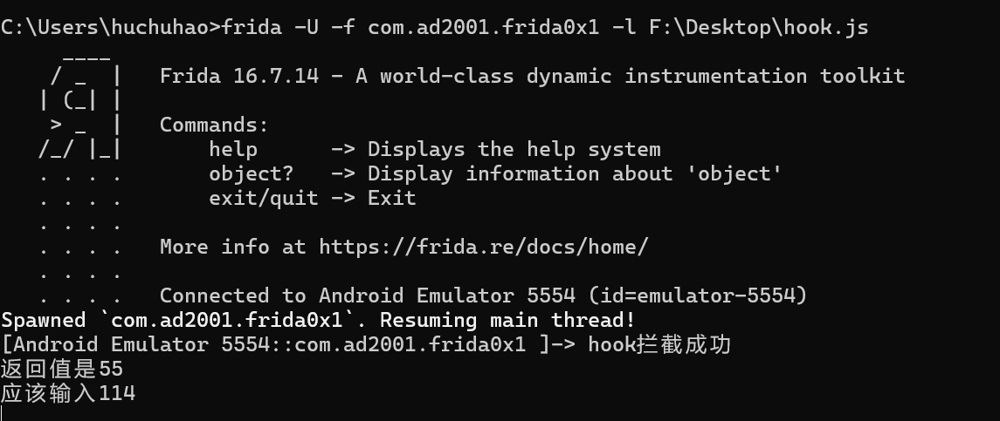
若出现以上回显说明拦截成功
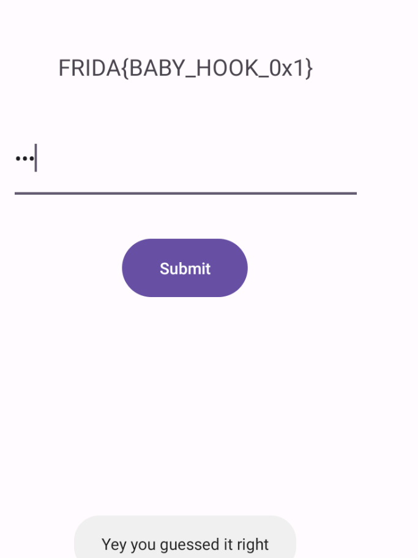
附上EXP：
1 2 3 4 5 6 7 8 9 10 Java .perform (function ( var hook = Java .use ("com.ad2001.frida0x1.MainActivity" ); hook.get_random .implementation = function ( console .log ("hook拦截成功" ); var i = this .get_random (); console .log ("返回值是" + i + "\n应该输入" + (i * 2 + 4 )); return i; }; });
Frida 0x2 这个程序进去之后就一个”hook me”字样，猜测是需要hook某个关键函数
1 2 3 4 5 6 7 8 9 10 11 12 13 14 15 16 17 18 19 20 21 22 23 24 25 26 27 28 29 30 31 32 33 34 35 36 37 package com.ad2001.frida0x2;import android.os.Bundle;import android.util.Base64;import android.widget.TextView;import androidx.appcompat.app.AppCompatActivity;import javax.crypto.Cipher;import javax.crypto.spec.IvParameterSpec;import javax.crypto.spec.SecretKeySpec;public class MainActivity extends AppCompatActivity { static TextView t1; public static void get_flag (int a) { if (a == 4919 ) { try { SecretKeySpec secretKeySpec0 = new SecretKeySpec ("HILLBILLWILLBINN" .getBytes(), "AES" ); Cipher cipher0 = Cipher.getInstance("AES/CBC/PKCS5Padding" ); cipher0.init(2 , secretKeySpec0, new IvParameterSpec (new byte [16 ])); String decryptedText = new String (cipher0.doFinal(Base64.decode("q7mBQegjhpfIAr0OgfLvH0t/D0Xi0ieG0vd+8ZVW+b4=" , 0 ))); MainActivity.t1.setText(decryptedText); } catch (Exception e) { e.printStackTrace(); } } } @Override protected void onCreate (Bundle savedInstanceState) { super .onCreate(savedInstanceState); this .setContentView(layout.activity_main); MainActivity.t1 = (TextView)this .findViewById(id.textview); } }
JEB分析关键函数，显然是需要hook getflag函数。但是实际上我们只需要带参数调用一下这个函数就出来了。怎么带参数调用呢？
上关我们学习到：Java.use创建对象后，可以用implementation重写方法，实际上我们想要调用一个函数，不加这个属性直接调用即可，非常方便，如下所示：
1 2 3 4 5 6 Java .perform (function ( var hook = Java .use ("com.ad2001.frida0x2.MainActivity" ); hook.get_flag (4919 ); console .log ("hook成功" ); });
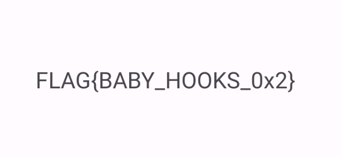
这里需要注意启动命令变了，变为了：
1 frida -U -F -l F:\Desktop\hook.js
-F意思是自动附加到一个前台运行的程序，注意这个模式是附加。我们hook的函数会改变mainActivity的字符控件，因此不能在程序刚开始运行就执行hook，这时候MainActivity还没有进行初始化呢！因此不能用0x1的命令了。所以hook的时机也很重要，假如我们hook的函数执行时机是在程序初始化的时候，则不适合用这种方式，应该用0x1演示的spawn模式。
此外还需要注意，因为这个方法没有被程序主动调用，我们hook调用了，他才回显了flag
Frida 0x3 主界面大概如图所示，提示我们点击按钮。拖进JEB分析一下
主要代码如下：
1 2 3 4 5 6 7 8 9 10 11 12 13 14 15 16 17 18 19 20 21 22 23 24 25 26 27 28 29 30 31 32 33 34 35 36 37 38 39 40 41 42 43 44 45 46 47 48 49 50 51 52 53 54 55 56 57 58 59 60 61 62 63 64 65 66 67 68 69 package com.ad2001.frida0x3;import android.os.Bundle;import android.view.View.OnClickListener;import android.view.View;import android.widget.Button;import android.widget.TextView;import android.widget.Toast;import androidx.appcompat.app.AppCompatActivity;import java.nio.charset.Charset;import java.security.InvalidKeyException;import java.security.NoSuchAlgorithmException;import java.util.Base64;import javax.crypto.BadPaddingException;import javax.crypto.Cipher;import javax.crypto.IllegalBlockSizeException;import javax.crypto.NoSuchPaddingException;import javax.crypto.spec.SecretKeySpec;public class MainActivity extends AppCompatActivity { TextView t1; @Override protected void onCreate (Bundle savedInstanceState) { super .onCreate(savedInstanceState); this .setContentView(layout.activity_main); Button btn = (Button)this .findViewById(id.button); this .t1 = (TextView)this .findViewById(id.textView); btn.setOnClickListener(new View .OnClickListener() { @Override public void onClick (View v) { byte [] arr_b1; if (Checker.code == 0x200 ) { Toast.makeText(MainActivity.this .getApplicationContext(), "YOU WON!!!" , 1 ).show(); SecretKeySpec secretKeySpec0 = new SecretKeySpec ("glass123" .getBytes(), "Blowfish" ); byte [] arr_b = Base64.getDecoder().decode("MKxsZsY9Usw3ozXKKzTF0ymIaC8rs0AY74GnaKqkUrk=" ); try { Cipher cipher0 = Cipher.getInstance("Blowfish" ); cipher0.init(2 , secretKeySpec0); arr_b1 = cipher0.doFinal(arr_b); } catch (NoSuchAlgorithmException e) { throw new RuntimeException (e); } catch (NoSuchPaddingException e) { throw new RuntimeException (e); } catch (IllegalBlockSizeException e) { throw new RuntimeException (e); } catch (BadPaddingException e) { throw new RuntimeException (e); } catch (InvalidKeyException e) { throw new RuntimeException (e); } String s = new String (arr_b1, Charset.forName("UTF-8" )); MainActivity.this .t1.setText(s); return ; } Toast.makeText(MainActivity.this .getApplicationContext(), "TRY AGAIN" , 1 ).show(); } }); } }
实际上checker函数有一个increase函数，可以让code+=2。那我们现在存在两个思路：
思路2，能否直接给checker赋值
不管哪种思路，我们这次开始hook Checker类，千万不要搞错了。
同时需要注意，这是onClick的点击触发事件，那么哪种启动方式已经没什么区别，因为hook时机始终在用户点击按钮的那一刻
思路1 我们写一个循环即可，调用方法在02就已经学过了
1 2 3 4 5 6 7 8 9 10 Java .perform (function ( var hook = Java .use ("com.ad2001.frida0x3.Checker" ); for (var i = 0 ; i <= 9999 ; i++) { hook.increase (); console .log ("当前code的值" + i + "\n" ); if (hook.code .value == 0x200 ) break ; } console .log ("hook成功" ); });
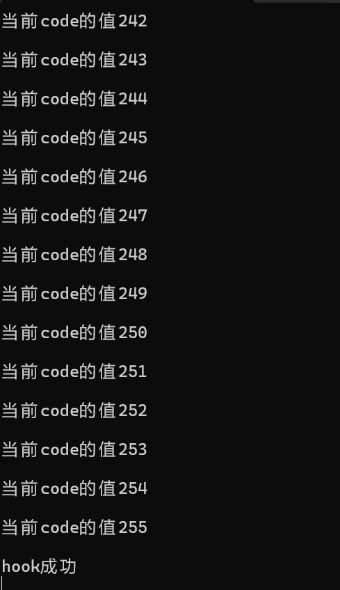
思路2 写静态属性和调用函数一样很方便，赋值即可
1 2 3 4 5 6 Java .perform (function ( var hook = Java .use ("com.ad2001.frida0x3.Checker" ); hook.code .value = 0x200 ; console .log ("hook成功" ); });
附赠一张成功图
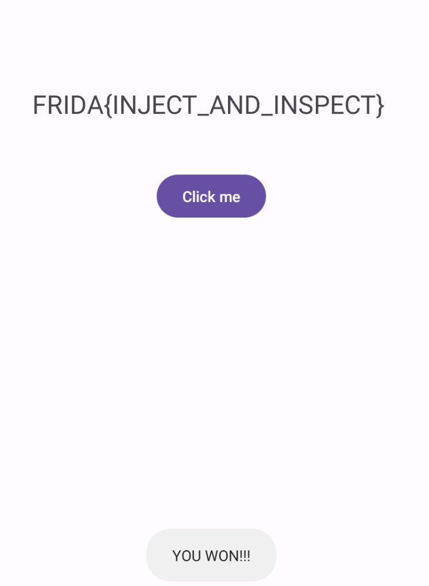
Frida 0x4 进去之后只有一个字符串：hello hackers
还是打开JEB看看代码：
1 2 3 4 5 6 7 8 9 10 package com.ad2001.frida0x4;public class Check { public String get_flag (int a) { return a == 0x539 ? "FRIDA{XORED_INSTANCE}" : "" ; } }
这里是贴合了CTF了，这不是静态方法，Frida想要调用非静态方法，必须先将其实例化。如果函数只是重写，和01一样，则不需要。豆包的解释如下所示：
闲话少说，现在开始介绍如何frida里面将类进行实例化：$new()
同时观察代码，我们需要获取的flag是函数返回值，而不是调用函数就万事大吉。
这个是主动调用，时机同样是两个都可以。
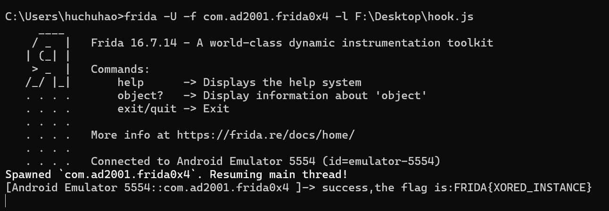
exp：
1 2 3 4 5 6 7 Java .perform (function ( var hook = Java .use ("com.ad2001.frida0x4.Check" ); var instance = hook.$new(); var flag = instance.get_flag (0x539 ); console .log ("success,the flag is:" + flag); });
Frida 0x5 点进去还是什么也没有，只有一个Hello World
1 2 3 4 5 6 7 8 9 10 11 12 13 14 15 16 17 18 19 20 21 22 23 24 25 26 27 28 29 30 31 32 33 34 35 36 37 package com.ad2001.frida0x5;import android.os.Bundle;import android.widget.TextView;import androidx.appcompat.app.AppCompatActivity;import java.util.Base64;import javax.crypto.Cipher;import javax.crypto.spec.IvParameterSpec;import javax.crypto.spec.SecretKeySpec;public class MainActivity extends AppCompatActivity { TextView t1; public void flag (int code) { if (code == 0x539 ) { try { SecretKeySpec secretKeySpec0 = new SecretKeySpec ("WILLIWOMNKESAWEL" .getBytes(), "AES" ); Cipher cipher0 = Cipher.getInstance("AES/CBC/PKCS5Padding" ); cipher0.init(2 , secretKeySpec0, new IvParameterSpec (new byte [16 ])); String decryptedText = new String (cipher0.doFinal(Base64.getDecoder().decode("2Y2YINP9PtJCS/7oq189VzFynmpG8swQDmH4IC9wKAY=" ))); this .t1.setText(decryptedText); } catch (Exception e) { e.printStackTrace(); } } } @Override protected void onCreate (Bundle savedInstanceState) { super .onCreate(savedInstanceState); this .setContentView(layout.activity_main); this .t1 = (TextView)this .findViewById(id.textview); } }
应该也是要主动调用flag方法，但是需要注意因为这不是静态方法，我们需要先实例化才能修改里面的值。但是这个方法是MainActivity里面的，会被系统自己实例化。我们自己new，反而会报错：
1 2 3 4 5 6 7 8 9 10 11 12 13 14 15 Error: java.lang.RuntimeException : Can 't create handler inside thread Thread [Thread -3,10,main ] that has not called Looper.prepare () at <anonymous > (frida /node_modules /frida -java -bridge /lib /env.js :124) at value (frida /node_modules /frida -java -bridge /lib /class -factory.js :1237) at e (frida /node_modules /frida -java -bridge /lib /class -factory.js :643) at apply (native ) at value (frida /node_modules /frida -java -bridge /lib /class -factory.js :1141) at e (frida /node_modules /frida -java -bridge /lib /class -factory.js :610) at <anonymous > (F :\Desktop \hook.js :3) at <anonymous > (frida /node_modules /frida -java -bridge /lib /vm.js :12) at _performPendingVmOps (frida /node_modules /frida -java -bridge /index.js :248) at <anonymous > (frida /node_modules /frida -java -bridge /index.js :223) at <anonymous > (frida /node_modules /frida -java -bridge /lib /vm.js :12) at _performPendingVmOpsWhenReady (frida /node_modules /frida -java -bridge /index.js :242) at perform (frida /node_modules /frida -java -bridge /index.js :202) at <eval > (F :\Desktop \hook.js :6)
因此我们需要在APP已经实例化完毕的类里面去找实例，然后调用对应的方法，像这种需要用到已经被实例化的对象的方法的情况，可以通过frida的API：Java.choose去筛选。我们可以理解为这是一个搜索引擎，搜索到匹配实例后回调函数放在onMatch语句下面，还可以放一个onComplete用于完成后续任务，搜索结果用M_NEW定义表示。
1 2 3 4 5 6 7 8 9 10 Java .choose ("目标类完整名" , { onMatch : function (instance ) { }, onComplete : function ( } });
这样说可能有点抽象，大家可以结合注释进行阅读：
1 2 3 4 5 6 7 8 9 10 11 12 13 Java .perform (function ( Java .choose ("com.ad2001.frida0x5.MainActivity" , { onMatch : function (M_NEW ) { console .log ("找到了" ); M_NEW .flag (0x539 ); }, onComplete : function ( }); console .log ("success" ); });
这里我不知道为什么，不加onComplete总会报错，问豆包说是Frida 16.x 以下版本：对「无 onComplete 的 Java.choose」解析逻辑有 bug，尤其在 Android 12+ 设备上，会误判回调配置不完整。但是查阅资料说这是可选的参数，总之我还是写上吧。
依旧放一个成功的照片：
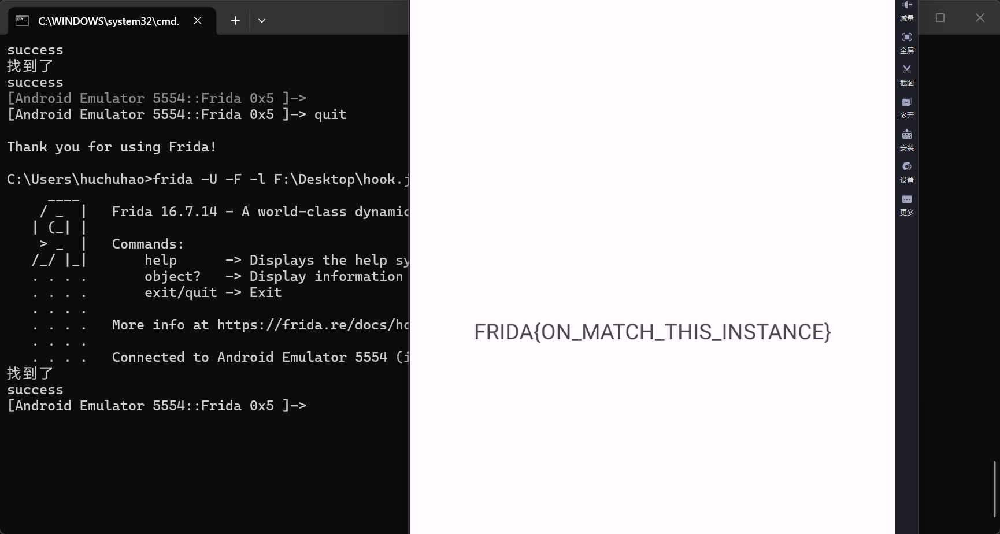
Frida 0x6 点进去还是啥也没有，和0x5一样。
1 2 3 4 5 6 7 8 9 10 11 12 13 14 15 16 17 18 19 20 21 22 23 24 25 26 27 28 29 30 31 32 33 34 35 36 37 38 39 package com.ad2001.frida0x6;import android.os.Bundle;import android.widget.TextView;import androidx.appcompat.app.AppCompatActivity;import java.security.InvalidKeyException;import java.security.NoSuchAlgorithmException;import java.util.Base64;import javax.crypto.BadPaddingException;import javax.crypto.Cipher;import javax.crypto.IllegalBlockSizeException;import javax.crypto.NoSuchPaddingException;import javax.crypto.spec.SecretKeySpec;public class MainActivity extends AppCompatActivity { TextView t1; public void get_flag (Checker A) throws NoSuchPaddingException, NoSuchAlgorithmException, InvalidKeyException, IllegalBlockSizeException, BadPaddingException { if (0x4D2 == A.num1 && 0x10E1 == A.num2) { Cipher cipher0 = Cipher.getInstance("AES" ); cipher0.init(2 , new SecretKeySpec ("MySecureKey12345" .getBytes(), "AES" )); String s = new String (cipher0.doFinal(Base64.getDecoder().decode("QQzMj/JNaTblEHnIzgJAQkvWJV2oK9G2/UmrCs85fog=" ))); this .t1.setText(s); } } @Override protected void onCreate (Bundle savedInstanceState) { super .onCreate(savedInstanceState); this .setContentView(layout.activity_main); this .t1 = (TextView)this .findViewById(id.textview); } } public class Checker { int num1; int num2; }
这个代码和第五关总体差不多，但是参数是一个实例。之前我们学习过参数是整数的情况，是直接赋值的，其实这个也大同小异，但是这时候需要我们同时用两个API，因为涉及了两个类，且一个类是实例化后的。
还记得之前hook静态方法我们用到的Java.use接口吗？一句话来说，use用的是class类模板而不是实例，choose是实例。我们这时候用use给checker类赋值，调用main的方法即可美美得到flag。下面是官方解释：
接口
官方核心定义
本质作用
Java.use()Dynamically acquire a JavaScript wrapper for a Java class (prototype).
获取 Java 类的原型包装器 （可理解为「类的模板」），用于 Hook 静态方法、构造方法，或获取类的元信息。
Java.choose()Enumerate live instances of a given Java class in the process’s heap.
枚举进程内存中已实例化 的该类对象（堆中的真实实例），用于操作已存在的对象实例。
代码如下：
1 2 3 4 5 6 7 8 9 10 11 12 13 14 15 16 Java.perform(function () { Java.choose("com.ad2001.frida0x6.MainActivity" , { onMatch: function (M_NEW) { console.log("找到了" ); var checker = Java.use("com.ad2001.frida0x6.Checker" ); var checker_ins = checker.$new (); checker_ins.num1.value = 0x4d2 ; checker_ins.num2.value = 0x10e1 ; M_NEW.get_flag(checker_ins); console.log("done" ); }, onComplete: function () {}, }); });
成功图：
Frida 0x7 这次进去还是什么也没有
反编译代码如下：
1 2 3 4 5 6 7 8 9 10 11 12 13 14 15 16 17 18 19 20 21 22 23 24 25 26 27 28 29 30 31 32 33 34 35 36 37 38 39 40 41 42 43 44 45 46 47 48 49 50 51 52 53 54 55 56 57 58 59 60 61 62 63 64 65 package com.ad2001.frida0x7;import android.os.Bundle;import android.widget.TextView;import androidx.appcompat.app.AppCompatActivity;import java.security.InvalidKeyException;import java.security.NoSuchAlgorithmException;import java.util.Base64;import javax.crypto.BadPaddingException;import javax.crypto.Cipher;import javax.crypto.IllegalBlockSizeException;import javax.crypto.NoSuchPaddingException;import javax.crypto.spec.SecretKeySpec;public class MainActivity extends AppCompatActivity { TextView t1; public void flag (Checker A) throws NoSuchPaddingException, NoSuchAlgorithmException, InvalidKeyException, IllegalBlockSizeException, BadPaddingException { if (A.num1 > 0x200 && 0x200 < A.num2) { Cipher cipher0 = Cipher.getInstance("AES" ); cipher0.init(2 , new SecretKeySpec ("MySecureKey12345" .getBytes(), "AES" )); String s = new String (cipher0.doFinal(Base64.getDecoder().decode("cL/bBqDmfO0IXXJCVFwYLeHp1k3mQr+SP6rlQGUPZTY=" ))); this .t1.setText(s); } } @Override protected void onCreate (Bundle savedInstanceState) { super .onCreate(savedInstanceState); this .setContentView(layout.activity_main); this .t1 = (TextView)this .findViewById(id.textview); Checker checker0 = new Checker (0x7B , 321 ); try { this .flag(checker0); } catch (NoSuchPaddingException e) { throw new RuntimeException (e); } catch (NoSuchAlgorithmException e) { throw new RuntimeException (e); } catch (InvalidKeyException e) { throw new RuntimeException (e); } catch (IllegalBlockSizeException e) { throw new RuntimeException (e); } catch (BadPaddingException e) { throw new RuntimeException (e); } } } public class Checker { int num1; int num2; Checker(int a, int b) { this .num1 = a; this .num2 = b; } }
发现了吗？这道题相对于上一题，增加了构造方法，而且MainActivity初始化的时候会实例化一个Checker类，它传入的值是不符合要求的。
这里直接用上一题目的脚本会报错，原因是这道题增加了构造方法，会提示参数不匹配。因此new的时候需要传入参数，这就不能直接赋值，而是用构造函数赋值
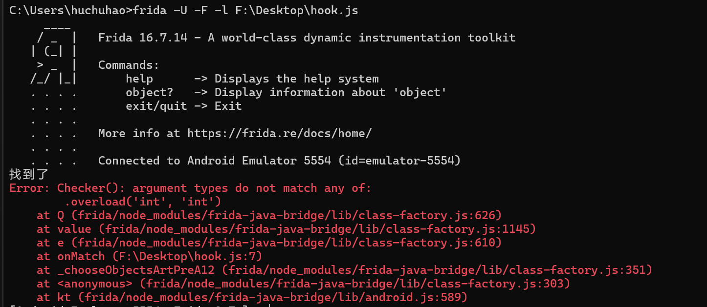
用构造函数赋值如下所示：
1 2 3 4 5 6 7 8 9 10 11 12 13 14 Java.perform(function () { Java.choose("com.ad2001.frida0x7.MainActivity" , { onMatch: function (M_NEW) { console.log("找到了" ); var checker = Java.use("com.ad2001.frida0x7.Checker" ); var checker_ins = checker.$new (0x201 , 0x201 ); M_NEW.flag(checker_ins); console.log("done" ); }, onComplete: function () {}, }); });
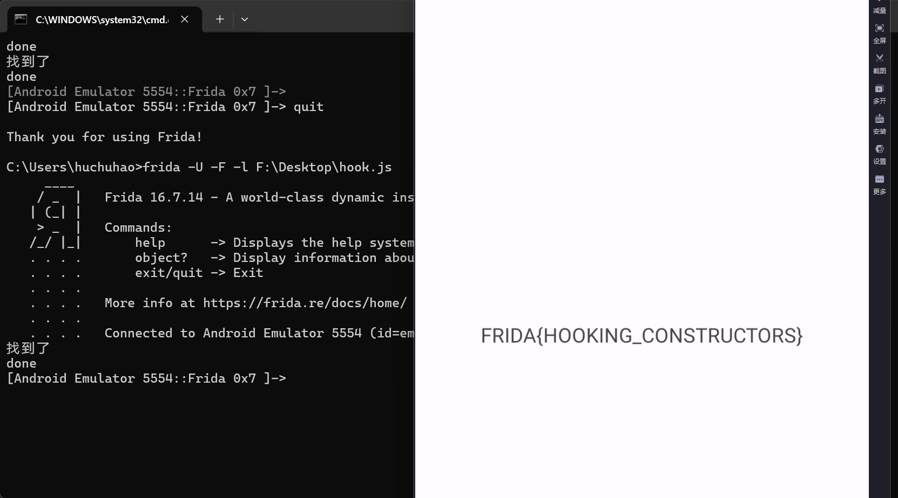
还有思路二，我们可以直接hook构造函数，frida里面用$init表示构造函数，注意调用构造函数参数数量之类的必须和原来的一样，但是外层函数无所谓。即外层function是形式上的，具体如下所示：
exp如下：启动方式得选择spawn了。
1 2 3 4 5 6 7 8 Java .perform (function ( var hook = Java .use ("com.ad2001.frida0x7.Checker" ); hook.$init .implementation = function ( this .$init(0x202 , 0x201 ); }; });
加餐 hook java参数 frida如何hook java层某方法调用时候的参数呢？
1 2 3 4 5 6 7 var TargetClass = Java .use ("包名.类名" ); TargetClass .目标方法名.implementation = function (参数1 , 参数2 , ... ) { console .log ("原始参数1：" , 参数1 ); console .log ("原始参数2：" , 参数2 );
Frida 0x8 打开之后，存在一个文本框控件 ，且存在一个提交按钮。输入错误之后，则会提示我们再次尝试
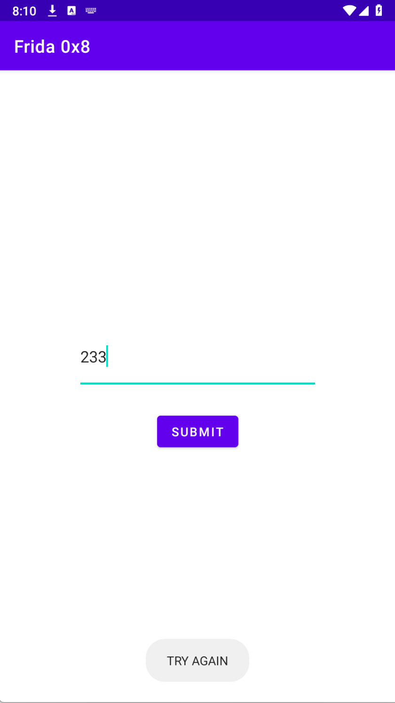
我们现在看源代码有没有什么提示信息：
1 2 3 4 5 6 7 8 9 10 11 12 13 14 15 16 17 18 19 20 21 22 23 24 25 26 27 28 29 30 31 32 33 34 35 36 37 38 39 40 41 42 43 44 45 46 47 48 package com.ad2001.frida0x8;import android.os.Bundle;import android.view.View.OnClickListener;import android.view.View;import android.widget.Button;import android.widget.EditText;import android.widget.Toast;import androidx.appcompat.app.AppCompatActivity;import com.ad2001.frida0x8.databinding.ActivityMainBinding;public class MainActivity extends AppCompatActivity { private ActivityMainBinding binding; Button btn; EditText edt; static { System.loadLibrary("frida0x8" ); } public native int cmpstr (String arg1) { } @Override protected void onCreate (Bundle savedInstanceState) { super .onCreate(savedInstanceState); ActivityMainBinding activityMainBinding0 = ActivityMainBinding.inflate(this .getLayoutInflater()); this .binding = activityMainBinding0; this .setContentView(activityMainBinding0.getRoot()); this .edt = (EditText)this .findViewById(id.editTextText); Button button0 = (Button)this .findViewById(id.button); this .btn = button0; button0.setOnClickListener(new View .OnClickListener() { @Override public void onClick (View v) { String s = MainActivity.this .edt.getText().toString(); if (MainActivity.this .cmpstr(s) == 1 ) { Toast.makeText(MainActivity.this , "YEY YOU GOT THE FLAG " + s, 1 ).show(); return ; } Toast.makeText(MainActivity.this , "TRY AGAIN" , 1 ).show(); } }); } }
ActivityMainBinding只是一个和改变布局控件相关的辅助函数，即 Android ViewBinding（视图绑定） 自动生成的辅助类，可能是系统自动生成，无需理会。注意看关键比较逻辑，和cmpstr函数进行了比较，这个函数在native层，典型的需要用IDA分析so层。
JEB提取library目录下的arm64-v8a下的so文件，或者直接解压apk在lib文件夹找到此so文件， 用IDA打开。因为这是主要考察Frida，so层不会做一些CTF题考察的混淆等，可以放心分析啦！
1 2 3 4 5 6 7 8 9 10 11 12 13 14 15 16 17 18 19 20 bool __fastcall Java_com_ad2001_frida0x8_MainActivity_cmpstr (__int64 a1, __int64 a2, __int64 a3) { int v4; int i; char *s1; char s2[100 ]; __int64 v10; v10 = *(_QWORD *)(_ReadStatusReg(TPIDR_EL0) + 40 ); s1 = (char *)_JNIEnv::GetStringUTFChars(a1, a3, 0 ); for ( i = 0 ; i < __strlen_chk("GSJEB|OBUJWF`MBOE~" , 0xFFFFFFFFFFFFFFFFL L); ++i ) s2[i] = aGsjebObujwfMbo[i] - 1 ; s2[__strlen_chk("GSJEB|OBUJWF`MBOE~" , 0xFFFFFFFFFFFFFFFFL L)] = 0 ; v4 = strcmp (s1, s2); __android_log_print(3 , "input " , "%s" , s1); __android_log_print(3 , "Password" , "%s" , s2); _JNIEnv::ReleaseStringUTFChars(a1, a3, s1); _ReadStatusReg(TPIDR_EL0); return v4 == 0 ; }
以上是IDA分析得到的函数，关键函数就在for循环里面，for循环之后s2最后一位给了0，也就是简单的加密操作。解密之后，利用v4进行C原生态字符串比较函数的操作。而拦截strcmp参数会得到解密后的数据，这就给了我们hook的可乘之机。
我们注意到函数会打印一个password，这个就是加密后的字符串，应该就是flag。这里学习一下使用Frida hook native层的方法。
想要hook native层函数，难度比hook java大得多，所使用的API也比较复杂。
根据官方题解来看，我们想要hook native层的方法，可使用Interceptor这个API。它的简单用法如下所示：
1 2 3 4 5 6 7 8 9 10 11 12 13 14 15 16 Interceptor .attach (目标函数地址/符号, { onEnter : function (args ) { console .log ("函数被调用，参数1：" , args[0 ]); }, onLeave : function (retval ) { console .log ("函数返回值：" , retval); retval.replace (0x1 ); } });
其实简单来看，语法模板和Java.choose差不多，只不过第一个是目标native函数符号了，而不是java类名。native层hook就复杂在这个地方，我们需要调用其他函数来找到目标函数地址。具体的可参考这位的博客：[Frida Native层Hook学习笔记 - gla2xy’s blog](https://gal2xy.github.io/2024/07/29/Frida Hook/Frida Native层Hook学习笔记/#调用native函数)，我感觉我一下子也记不住，以后拉屎的时候顺带看一眼得了，现在只是介绍这个题目所需要的API。
在此之前，先介绍一下导入表和导出表的区别：导出表是 “我提供给别人用的函数 / 符号”，导入表是 “我需要从别人那里拿的函数 / 符号”
维度
导出表（Export Table）
导入表（Import Table）
核心作用 对外暴露本文件的函数 / 变量（供其他文件调用）
声明本文件需要调用的、其他文件的函数 / 变量
所属文件 被依赖的文件（比如系统库 libc.so、自定义 libtest.so）
依赖别人的文件（比如你的业务 libapp.so）
存储内容 函数名 / 符号名、函数地址、序号等
要调用的函数名、对应的依赖库名（比如 libc.so）
使用场景 其他文件通过导出表找到并调用本文件的函数
本文件加载时，系统根据导入表找到并绑定外部函数
Frida 中用途 Module.getExportByName("libxxx.so", "func") 找函数地址逆向时分析文件依赖（比如 libapp.so 依赖哪些系统函数）
是否可缺失 纯依赖型文件（无对外函数）可无导出表
无外部依赖的文件（比如纯静态逻辑）可无导入表
我们想要找到so的地址，就是找到导出表，Module.enumerateExports()能打包所有的导出表函数，这个方法会返回一个元组。具体实例如下所示：来源于我上文提到的博客
1 2 3 4 5 const imports = Module .enumerateImports ('libart.so' );for (const iterator of imports) { console .log (JSON .stringify (iterator)); }
我们要获取地址，就得选择：findExportByName
1 2 const funcAddr = Module.findExportByName('libart.so', '_ZN9unix_file6FdFile5WriteEPKcll'); console.log(funcAddr);
getExportByName同findExportByName。区别是find找不到会返回null，get则会报错。
有时候我们实在找不到这些函数的地址（可能因为没有加载等）可以使用Module.getBaseAddress()方法，返回基地址之后，在IDA里面看到偏移，就能获取到想要的函数的地址。
当然这道题不需要太复杂，因为能直接找到想要的函数！
首先我们获取所有的导出函数，看看我们掌握了API用法没。
1 2 3 var all_ex = Module .enumerateExports ("libfrida0x8.so" );console .log (JSON .stringify (all_ex, null , 2 ));
得到以下输出，看到cmpstr了吗？这就是我们要hook的。
其他API简单使用可以看图。
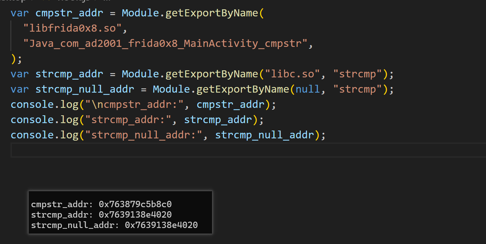
我们需要注意下，函数的strcmp是外部导入的，显而易见来源于libc.so，我们在这里找这个函数地址才行。
借助onEnter即可获取参数，这里有一个小技巧，可以在onEnter搞一个固定参数用于判断进入的是不是我们需要的函数，是的话就能接着hook否则不进行hook。这里演示一下，其实这道题不需要这样也可以。
这里虽然我们主程序没有提示成功，但是我们已经拿到flag
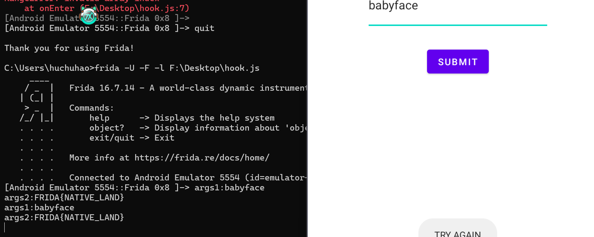
exp：
1 2 3 4 5 6 7 8 9 10 11 12 13 14 15 16 17 var strcmp = Module .getExportByName ("libc.so" , "strcmp" );Interceptor .attach (strcmp, { onEnter : function (args ) { var arg = args[0 ].readCString (); var arg2 = args[1 ].readCString (); if (arg.includes ("babyface" )) { console .log ("args1:" + arg + "\nargs2:" + arg2); } }, });
Frida 0x9 只有一个click me按钮。还是进入JADX看一下。老是用JEB审美疲劳了。
1 2 3 4 5 6 7 8 9 10 11 12 13 14 15 16 17 18 19 20 21 22 23 24 25 26 27 28 29 30 31 32 33 34 35 36 37 38 39 40 41 42 43 44 45 46 47 48 49 50 51 52 53 54 55 56 57 58 59 60 61 62 63 64 65 66 67 68 69 package com.ad2001.a0x9;import android.os.Bundle;import android.view.View;import android.widget.Button;import android.widget.Toast;import androidx.appcompat.app.AppCompatActivity;import com.ad2001.a0x9.databinding.ActivityMainBinding;import java.security.InvalidKeyException;import java.security.NoSuchAlgorithmException;import java.util.Base64;import javax.crypto.BadPaddingException;import javax.crypto.Cipher;import javax.crypto.IllegalBlockSizeException;import javax.crypto.NoSuchPaddingException;import javax.crypto.spec.SecretKeySpec;public class MainActivity extends AppCompatActivity { private ActivityMainBinding binding; Button btn; public native int check_flag () ; static { System.loadLibrary("a0x9" ); } @Override protected void onCreate (Bundle savedInstanceState) { super .onCreate(savedInstanceState); ActivityMainBinding activityMainBindingInflate = ActivityMainBinding.inflate(getLayoutInflater()); this .binding = activityMainBindingInflate; setContentView(activityMainBindingInflate.getRoot()); Button button = (Button) findViewById(C0549R.id.button); this .btn = button; button.setOnClickListener(new View .OnClickListener() { @Override public void onClick (View v) throws NoSuchPaddingException, NoSuchAlgorithmException, InvalidKeyException { if (MainActivity.this .check_flag() == 1337 ) { try { Cipher cipher = Cipher.getInstance("AES" ); SecretKeySpec secretKeySpec = new SecretKeySpec ("3000300030003003" .getBytes(), "AES" ); try { cipher.init(2 , secretKeySpec); byte [] decryptedBytes = Base64.getDecoder().decode("hBCKKAqgxVhJMVTQS8JADelBUPUPyDiyO9dLSS3zho0=" ); try { String decrypted = new String (cipher.doFinal(decryptedBytes)); Toast.makeText(MainActivity.this .getApplicationContext(), "You won " + decrypted, 1 ).show(); return ; } catch (BadPaddingException e) { throw new RuntimeException (e); } catch (IllegalBlockSizeException e2) { throw new RuntimeException (e2); } } catch (InvalidKeyException e3) { throw new RuntimeException (e3); } } catch (NoSuchAlgorithmException e4) { throw new RuntimeException (e4); } catch (NoSuchPaddingException e5) { throw new RuntimeException (e5); } } Toast.makeText(MainActivity.this .getApplicationContext(), "Try again" , 1 ).show(); } }); } }
其实很明显看出来是需要我们hook 返回值的，现在去IDA看一下相关函数
1 2 3 4 __int64 Java_com_ad2001_a0x9_MainActivity_check_1flag () { return 1 ; }
那很显而易见，需要hook返回值。
老办法，先打印出来所有的lib层函数，再来分析目标libc函数地址
1 2 3 var libfunc = Module .enumerateExports ("liba0x9.so" );console .log (JSON .stringify (libfunc, null , 2 ));
其实观察也能看出来这个和IDA的名字一模一样。
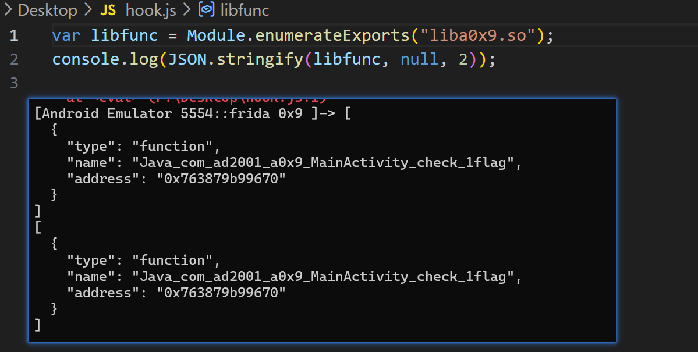
下面用上文提及的Interceptor即可hook
刚好借此机会介绍一下retval和args的区别。如下所示：
特性
args（函数入参）
retval（返回值）
类型
数组（NativePointer数组）
单个 InvocationReturnValue 对象
触发时机
onEnter 阶段（函数刚调用）onLeave 阶段（函数执行完）
替换操作
直接赋值修改数组元素
调用 replace() 方法替换值
代表含义
函数的输入参数（多个）
函数的返回结果（单个）
因此我们替换和打印就有所区别。args和数组操作一样，retval的替换是replace方法，而打印存在toInt32和toString方法。相信看到名字就能理解这个方法的作用了，可以使用下看看输出结果，详细见下图
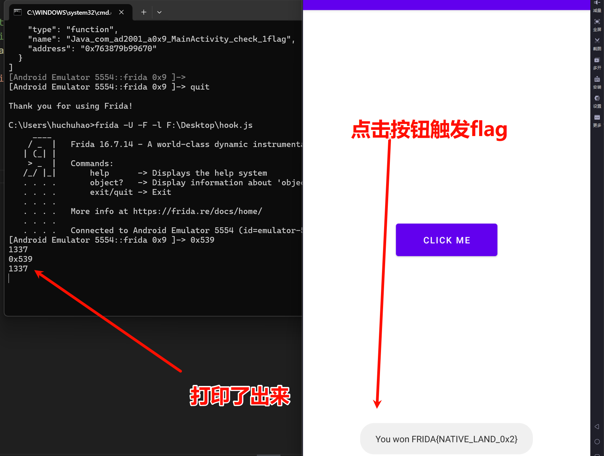
exp如下：
1 2 3 4 5 6 7 8 9 10 11 12 13 14 15 var libc = Module .findExportByName ( "liba0x9.so" , "Java_com_ad2001_a0x9_MainActivity_check_1flag" , ); Interceptor .attach (libc, { onLeave : function (retval ) { retval.replace (0x539 ); console .log (retval + "\n" + retval.toInt32 ()); }, });
而且由于是点击按钮触发，附加模式hook即可。
Frida 0xA 雷电模拟器闪退，只能看静态代码了。
静态代码没有和应用退出相关的代码，看了WP应该是安卓11以上可以运行，师傅们可以配一个高版本安卓模拟器，我这小菜菜就不折腾了
1 2 3 4 5 6 7 8 9 10 11 12 13 14 15 16 17 18 19 20 21 22 23 24 25 26 27 28 29 30 31 32 33 34 35 36 37 38 39 40 41 42 package com.ad2001.frida0xa;import android.os.Bundle;import androidx.appcompat.app.AppCompatActivity;import androidx.constraintlayout.widget.ConstraintLayout;import com.ad2001.frida0xa.databinding.ActivityMainBinding;import kotlin.Metadata;import kotlin.jvm.internal.Intrinsics;@Metadata(m126d1 = {"\u0000&\n\u0002\u0018\u0002\n\u0002\u0018\u0002\n\u0002\b\u0002\n\u0002\u0018\u0002\n\u0000\n\u0002\u0010\u0002\n\u0000\n\u0002\u0018\u0002\n\u0000\n\u0002\u0010\u000e\n\u0002\b\u0002\u0018\u0000 \u000b2\u00020\u0001:\u0001\u000bB\u0005¢\u0006\u0002\u0010\u0002J\u0012\u0010\u0005\u001a\u00020\u00062\b\u0010\u0007\u001a\u0004\u0018\u00010\bH\u0014J\t\u0010\t\u001a\u00020\nH\u0086 R\u000e\u0010\u0003\u001a\u00020\u0004X\u0082.¢\u0006\u0002\n\u0000¨\u0006\f"}, m127d2 = {"Lcom/ad2001/frida0xa/MainActivity;", "Landroidx/appcompat/app/AppCompatActivity;", "()V", "binding", "Lcom/ad2001/frida0xa/databinding/ActivityMainBinding;", "onCreate", "", "savedInstanceState", "Landroid/os/Bundle;", "stringFromJNI", "", "Companion", "app_debug"}, m128k = 1, m129mv = {1, 8, 0}, m131xi = ConstraintLayout.LayoutParams.Table.LAYOUT_CONSTRAINT_VERTICAL_CHAINSTYLE) public final class MainActivity extends AppCompatActivity { private ActivityMainBinding binding; public final native String stringFromJNI () ; @Override protected void onCreate (Bundle savedInstanceState) { super .onCreate(savedInstanceState); ActivityMainBinding activityMainBindingInflate = ActivityMainBinding.inflate(getLayoutInflater()); Intrinsics.checkNotNullExpressionValue(activityMainBindingInflate, "inflate(layoutInflater)" ); this .binding = activityMainBindingInflate; ActivityMainBinding activityMainBinding = null ; if (activityMainBindingInflate == null ) { Intrinsics.throwUninitializedPropertyAccessException("binding" ); activityMainBindingInflate = null ; } setContentView(activityMainBindingInflate.getRoot()); ActivityMainBinding activityMainBinding2 = this .binding; if (activityMainBinding2 == null ) { Intrinsics.throwUninitializedPropertyAccessException("binding" ); } else { activityMainBinding = activityMainBinding2; } activityMainBinding.sampleText.setText(stringFromJNI()); } static { System.loadLibrary("frida0xa" ); } }
一整个onCreate方法就是一个控件的替换操作，因此可以不看了。
主要是static，这是一个静态块，静态块能保证 “类一加载就加载 SO 库”，且只加载一次（避免重复加载浪费资源），是 JNI 开发的标准写法。我们去IDA看看内容：
1 2 3 4 5 6 7 8 9 10 11 12 13 14 15 __int64 __fastcall Java_com_ad2001_frida0xa_MainActivity_stringFromJNI (_JNIEnv *a1) { const char *v1; __int64 v3; _BYTE v5[24 ]; __int64 v6; v6 = *(_QWORD *)(_ReadStatusReg(TPIDR_EL0) + 40 ); std ::string ::basic_string<decltype(nullptr)>(); v1 = (const char *)sub_1DD3C(v5); v3 = _JNIEnv::NewStringUTF(a1, v1); std ::string ::~string (v5); _ReadStatusReg(TPIDR_EL0); return v3; }
可以看到没什么内容。这里有一个小心得，逆向的时候可以多工具联合使用，打开ghidra第一眼就看到了get_flag函数，而且ghidra还能分析出stringFromJNI函数的实际反汇编：
1 2 3 4 5 6 7 8 9 10 11 12 13 14 15 16 17 18 19 20 21 22 23 24 25 26 27 undefined8 Java_com_ad2001_frida0xa_MainActivity_stringFromJNI (_JNIEnv *param_1) { long lVar1; char *pcVar2; undefined8 uVar3; basic_string<> abStack_30 [24 ]; long local_18; lVar1 = tpidr_el0; local_18 = *(long *)(lVar1 + 0x28 ); std ::__ndk1::basic_string<>::basic_string<>(abStack_30,"Hello Hackers" ); pcVar2 = (char *)FUN_0011dd3c(abStack_30); uVar3 = _JNIEnv::NewStringUTF(param_1,pcVar2); std ::__ndk1::basic_string<>::~basic_string(abStack_30); lVar1 = tpidr_el0; lVar1 = *(long *)(lVar1 + 0x28 ) - local_18; if (lVar1 == 0 ) { return uVar3; } __stack_chk_fail(lVar1); }
那明显就是设置程序开场的文本，估计就是Hello Hackers
突发奇想看看binaryninja这个软件能不能看到关键函数
可以看到对这道题而言实际效果不是太理想
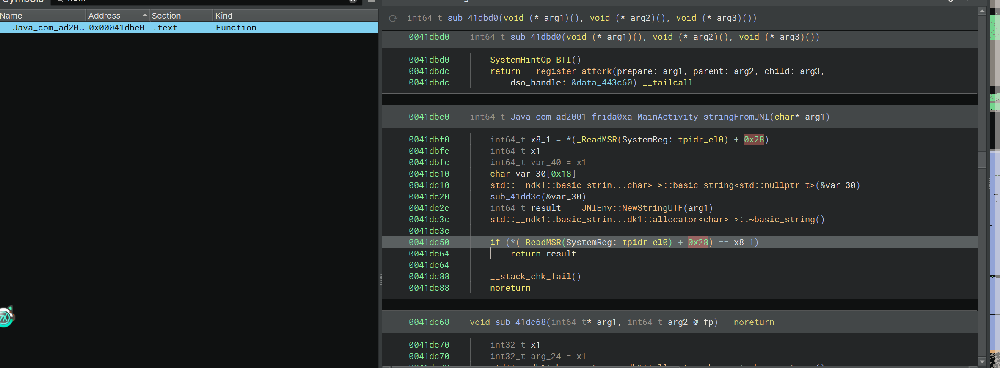
IDA分析get_flag函数：
1 2 3 4 5 6 7 8 9 10 11 12 13 14 15 16 17 __int64 __fastcall get_flag (__int64 result, int a2) { int i; char v3[20 ]; __int64 v4; v4 = *(_QWORD *)(_ReadStatusReg(TPIDR_EL0) + 40 ); if ( (_DWORD)result + a2 == 3 ) { for ( i = 0 ; i < __strlen_chk("FPE>9q8A>BK-)20A-#Y" , 0xFFFFFFFFFFFFFFFFL L); ++i ) v3[i] = aFpe9q8aBk20aY[i] + 2 * i; v3[19 ] = 0 ; result = __android_log_print(3 , "FLAG" , "Decrypted Flag: %s" , v3); } _ReadStatusReg(TPIDR_EL0); return result; }
get_flag参数是两个数字，相加=3就解密并且弹出flag
注意，这在Java程序没有被引用，这不是so的导出函数，想要获取他的地址只能用上文（0x8）介绍的基地址+偏移的方式，但是当时没有认真分析，现在是认真分析了。
还需要说一下__android_log_print是输出信息到控制台，我们可以hook这个函数，看它的参数，但是这个实现恐怕特别复杂，我们不如直接在adb shell看日志。这个后话，先主动调用函数。
如果对这种方式感兴趣，可以看一下这位大佬博客：frida-labs WP - APT114514
首先获取libc基地址，IDA查找偏移，就是这个native函数的地址。这里需要用add()方法增加偏移
1 2 3 4 var base_addr = Module .findBaseAddress ("libfrida0xa.so" );console .log (base_addr);var libc = Module .findBaseAddress ("libfrida0xa.so" ).add (0x1db80 );console .log (libc);
基地址获取还有另外一种方式，这就是枚举模块名称的思路。豆包说的，利用Process：
1 2 3 4 5 6 7 8 9 10 11 12 13 14 15 console .log ("========== 已加载的所有模块 ==========" );Process .enumerateModules ({ onMatch : function (module console .log (`模块名: ${module .name} ` ); console .log (` 路径: ${module .path} ` ); console .log (` 基地址: ${module .base} ` ); console .log (` 大小: 0x${module .size.toString(16 )} 字节` ); console .log ("----------------------------------" ); }, onComplete : function ( console .log ("✅ 模块枚举完成" ); }, });
然后需要new一个nativePointer对象，传入目标函数地址
然后需要new一个nativeFunction对象，需要先传入一个nativePointer对象，第二个参数是返回值，第三个以后的参数就是依次的原本参数。
1 2 3 4 var point = new NativePointer (libc);var func = new NativeFunction (point, "void" , ["int" , "int" ]);func (1 , 2 );
每一步打印出来相关值，是写代码的好习惯，方便迅速溯源到出错位置。
我安装了夜神模拟器防止闪退。需要注意这里要用夜神12版本，且adb用文件夹自带的nox_adb.exe
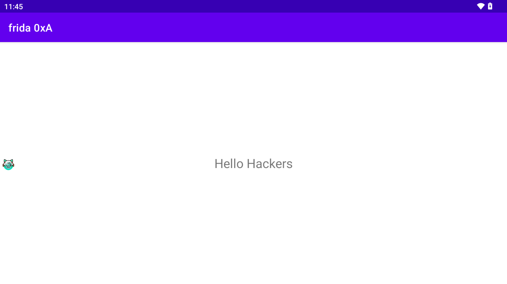
然后用-f参数，即spawn模式启动我们的app
假如报错：not a function，说明偏移找错了。如下是我们的模拟器偏移，因此我就找错了偏移，应该分析x64文件夹下面的so文件
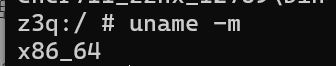
但是实际调试发现，偏移还是在X86看的，后面用夜神测试是X86_64地址，怀疑是雷电当时出bug了。
学到0xb之后，我们可以读指定内存汇编指令，快速查看是否找对了so偏移，不必担心，无非多试几次。
这里用-F启动，即attach，避免出现因为libc未加载就hook而导致基地址为null
adb查看日志：用logcat，-s后面跟要搜的字符串，这里用flag
命令片段
含义
adbAndroid Debug Bridge 的缩写，是安卓调试桥工具，用于电脑和安卓设备 / 模拟器通信
-s 127.0.0.1:5555指定调试的目标设备 / 模拟器（-s = serial number，序列号 / 地址）127.0.0.1:5555 是本地安卓模拟器的默认调试端口（比如 Android Studio 的模拟器）
logcatadb 的子命令，用于查看安卓系统 / APP 的运行日志（相当于安卓的「控制台输出」）
-s FLAG过滤日志（-s = silent，静默模式，只显示指定标签的日志）「FLAG」是日志的「标签（Tag）」，只打印 Tag 为 FLAG 的日志
完整exp：
1 2 3 4 5 6 7 8 var base_addr = Module .findBaseAddress ("libfrida0xa.so" );console .log (base_addr);var libc = Module .findBaseAddress ("libfrida0xa.so" ).add (0x1dd60 );console .log (libc);var point = new NativePointer (libc);var func = new NativeFunction (point, "void" , ["int" , "int" ]);func (1 , 2 );
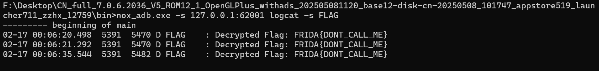
加餐：查看寄存器的值 在onEnter加一个this.context即可
1 2 3 4 5 6 7 Interceptor .attach (hookAddr, { onEnter : function (args ) { console .log ('onEnter: ' , JSON .stringify (this .context )) }, onLeave : function (retval ) {}, })
Frida 0xB 首先这道题也闪退，那么打开安卓12！
这道题目上强度了，而且作为so层函数，不会那么简单就让你hook的，和IDA反编译一样，必须得知道对应的字节，然后反编译，那就得要求操作内存数据，赋予相关的可执行权限。这倒不是主要的，可写权限才是最重要的，因为我们需要patch字节。
可以看到启动的时候会调用get_flag
1 2 3 4 5 6 7 8 9 10 11 12 13 14 15 16 17 18 19 20 21 22 23 24 25 26 27 28 29 30 31 32 33 34 35 36 37 38 39 40 41 42 43 44 45 46 47 48 49 50 51 package com.ad2001.frida0xb;import android.os.Bundle;import android.view.View;import android.widget.Button;import androidx.appcompat.app.AppCompatActivity;import androidx.constraintlayout.widget.ConstraintLayout;import com.ad2001.frida0xb.databinding.ActivityMainBinding;import kotlin.Metadata;import kotlin.jvm.internal.Intrinsics;@Metadata(m126d1 = {"\u0000\"\n\u0002\u0018\u0002\n\u0002\u0018\u0002\n\u0002\b\u0002\n\u0002\u0018\u0002\n\u0000\n\u0002\u0010\u0002\n\u0002\b\u0002\n\u0002\u0018\u0002\n\u0002\b\u0002\u0018\u0000 \n2\u00020\u0001:\u0001\nB\u0005¢\u0006\u0002\u0010\u0002J\t\u0010\u0005\u001a\u00020\u0006H\u0086 J\u0012\u0010\u0007\u001a\u00020\u00062\b\u0010\b\u001a\u0004\u0018\u00010\tH\u0014R\u000e\u0010\u0003\u001a\u00020\u0004X\u0082.¢\u0006\u0002\n\u0000¨\u0006\u000b"}, m127d2 = {"Lcom/ad2001/frida0xb/MainActivity;", "Landroidx/appcompat/app/AppCompatActivity;", "()V", "binding", "Lcom/ad2001/frida0xb/databinding/ActivityMainBinding;", "getFlag", "", "onCreate", "savedInstanceState", "Landroid/os/Bundle;", "Companion", "app_debug"}, m128k = 1, m129mv = {1, 8, 0}, m131xi = ConstraintLayout.LayoutParams.Table.LAYOUT_CONSTRAINT_VERTICAL_CHAINSTYLE) public final class MainActivity extends AppCompatActivity { private ActivityMainBinding binding; public final native void getFlag () ; @Override protected void onCreate (Bundle savedInstanceState) { super .onCreate(savedInstanceState); ActivityMainBinding activityMainBindingInflate = ActivityMainBinding.inflate(getLayoutInflater()); Intrinsics.checkNotNullExpressionValue(activityMainBindingInflate, "inflate(layoutInflater)" ); this .binding = activityMainBindingInflate; if (activityMainBindingInflate == null ) { Intrinsics.throwUninitializedPropertyAccessException("binding" ); activityMainBindingInflate = null ; } setContentView(activityMainBindingInflate.getRoot()); View viewFindViewById = findViewById(C0548R.id.button); Intrinsics.checkNotNullExpressionValue(viewFindViewById, "findViewById(R.id.button)" ); Button btn = (Button) viewFindViewById; btn.setOnClickListener(new View .OnClickListener() { @Override public final void onClick (View view) { MainActivity.onCreate$lambda$0 (this .f$0 , view); } }); } public static final void onCreate$lambda$0 (MainActivity this $0 , View it) { Intrinsics.checkNotNullParameter(this $0 , "this$0" ); this $0. getFlag(); } static { System.loadLibrary("frida0xb" ); } }
还是调用了一个get_flag
IDA F5不起作用了，看汇编存在干扰指令：
我们nop之
1 2 3 4 5 6 7 8 9 10 11 12 13 14 15 void Java_com_ad2001_frida0xb_MainActivity_getFlag () { char *v0; unsigned __int64 i_1; unsigned __int64 i; i_1 = __strlen_chk("j~ehmWbmxezisdmogi~Q" , -1 ); v0 = (char *)operator new[](i_1 + 1 ); for ( i = 0 ; i < i_1; ++i ) v0[i] = aJEhmwbmxezisdm[i] ^ 0x2C ; v0[i] = 0 ; __android_log_print(3 , "FLAG :" , "%s" , v0); if ( v0 ) operator delete[](v0); }
对于ghrida来说，可以取消勾选下图选项
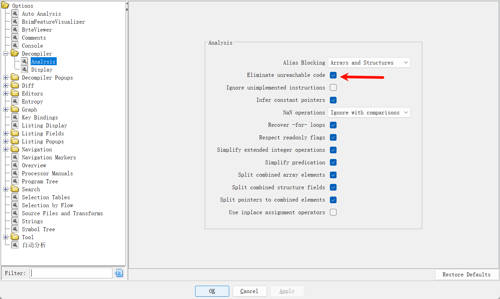
得到代码，汇编主逻辑不变，就是nop判断句。这是执行的时候的关键所在
1 2 3 4 5 6 7 8 9 10 11 12 13 14 15 16 17 18 19 20 21 22 void Java_com_ad2001_frida0xb_MainActivity_getFlag (void ) { uint uVar1; void *pvVar2; uint local_18; if (false ) { uVar1 = __strlen_chk("j~ehmWbmxezisdmogi~Q" ,0xffffffff ); pvVar2 = operator.new[](uVar1 + 1 ); for (local_18 = 0 ; local_18 < uVar1; local_18 = local_18 + 1 ) { *(byte *)((int )pvVar2 + local_18) = "j~ehmWbmxezisdmogi~Q" [local_18] ^ 0x2c ; } *(undefined1 *)((int )pvVar2 + local_18) = 0 ; __android_log_print(3 ,"FLAG :" ,&DAT_0001687e,pvVar2); if (pvVar2 != (void *)0x0 ) { operator.delete[](pvVar2); } } return ; }
由此可见只需要nop一个判断才行，最终FLAG就会被打印在安卓日志上面。
现在给大家介绍几个API接口用于操作native层的函数。
刚才已经介绍过，我们需要修改某片内存的权限以进行patch，这个操作需要用到Memory.protect(DEADBEEF, 0x1000, "rwx"); 这个API，其中第一个是地址，第二个是size，第三个是权限，如果是只可以读写，就是rw-
因为内存大小最小是页，即0x1000字节，我们写的时候参数是0x1000，第一个参数是目标地址就行
我们拿到一片text节内存地址，更希望打印出来其中的值，比如显示出附近的汇编语句之类的。这时候可以组合使用相关API，首推：
Memory.readByteArray(addr, size)用于读取部分内存地址的字节，返回一个字节数组Instruction.parse( address)传入一个指定地址，反编译此处指令为代码（能编译出一条完整指令为止）
第二个API参数支持两种类型：
参数形式
语法
适用场景
单参数形式
Instruction.parse(address)直接从内存中读取并解析指定地址的单条完整指令
双参数形式
Instruction.parse(address, bytes)解析传入的字节数组（bytes），并关联到指定地址（address）
这个组合使用就是读取内存处字节，我们关心代码，则再使用第二个API将他转化为代码。具体的例子如下所示：
1 2 3 4 5 var instructionBytes = Memory .readByteArray (DEADBEEF , size);console .log ("instructionBytes ：" ,instructionBytes);var instructions = Instruction .parse (DEADBEEF , instructionBytes);console .log ("instructions ：" ,instructions);
如何patch字节呢？现在介绍一个专门用于patch字节的API
需注意架构区别！！！arm架构使用Arm64Writer修改，x64、x86架构使用X86Writer修改。
这里用X86Writer，传入一个地址实例化类即可，如下所示：var writer = new X86Writer(DEADBEEF);
writer支持很多方法，我们常见的有：
方法名
作用
示例代码
对应汇编指令
pushReg(reg)寄存器入栈
writer.pushReg(regs.rax);push rax
pushImm(imm)立即数入栈
writer.pushImm(0x1234);push 0x1234
popReg(reg)出栈到寄存器
writer.popReg(regs.rax);pop rax
putCall(addr)函数调用指令
writer.putCall(0x7ff6a1b2c000);call 0x7ff6a1b2c000
putJmp(addr)无条件跳转
writer.putJmp(0x7ff6a1b2c400);jmp 0x7ff6a1b2c400
putNop()写入 1 字节空指令（nop），用于占位 / 替换指令
writer.putNop();nop
putRet()写入返回指令（ret），函数返回时用
writer.putRet();ret
putRetImm(imm)带立即数的 ret（ret n），返回时调整栈指针
writer.putRetImm(0x8);ret 0x8
putByte([])写入机器码
writer.putBytes([0x75, 0x05]);机器码对应的
最终不要忘记writer.flush();刷新缓冲区
这里我们可以打开IDA的机器码显示，看看对应的机器码是多少。可以看到是6个，我们填充6个90就行
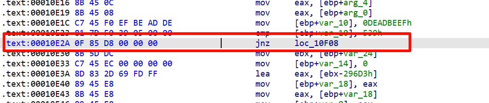
然后根据0xa学到的知识点，主动调用native层函数就万事大吉了。
那我们先找到基地址，然后找到对应地址偏移，打印出代码看看是不是目标代码。上文介绍的Process模块其实特别方便
这里偏移是x64的so偏移
1 2 3 4 5 6 7 8 9 10 11 12 13 14 15 var base;Process .enumerateModules ({ onMatch : function (module if (module .name == "libfrida0xb.so" ) { console .log ("模块名：" + module .name + "基地址：" + module .base ); base = module .base ; } }, onComplete : function ( }); var offset = 0x170ce ;var target_addr = base.add (offset);var bytesArr = Memory .readByteArray (target_addr, 6 );console .log (Instruction .parse (target_addr, bytesArr));
可以看到找对了
现在开始修改字节，首先修改内存权限，然后开始执行patch，全填充个nop就行了。
1 2 3 4 5 6 Memory .protect (target_addr, 0x1000 , "rwx" );var write = new X86Writer (target_addr);for (var i = 0 ; i < 6 ; i++) { write.putNop (); } write.flush ();
然后主动调用之
1 2 3 4 5 6 var func_addr = base.add (0x0170b0 );var func_pr = new NativePointer (func_addr);var func = new NativeFunction (func_pr, "void" , []);func ();console .log ("done" );
注意看so这一个代码：_android_log_print(3, "FLAG :", "%s", v0);tag变了，所以我们看flag语句也变了，原来的语句会报错
具体指令见下图
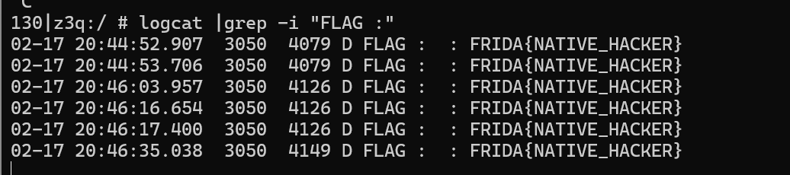
完结撒花，谢谢大家观看！
完整exp：
1 2 3 4 5 6 7 8 9 10 11 12 13 14 15 16 17 18 19 20 21 22 23 24 25 26 var base;Process .enumerateModules ({ onMatch : function (module if (module .name == "libfrida0xb.so" ) { console .log ("模块名：" + module .name + "基地址：" + module .base ); base = module .base ; } }, onComplete : function ( }); var offset = 0x170ce ;var target_addr = base.add (offset);var bytesArr = Memory .readByteArray (target_addr, 6 );console .log (Instruction .parse (target_addr, bytesArr));Memory .protect (target_addr, 0x1000 , "rwx" );var write = new X86Writer (target_addr);for (var i = 0 ; i < 6 ; i++) { write.putNop (); } write.flush (); var func_addr = base.add (0x0170b0 );var func_pr = new NativePointer (func_addr);var func = new NativeFunction (func_pr, "void" , []);func ();console .log ("done" );